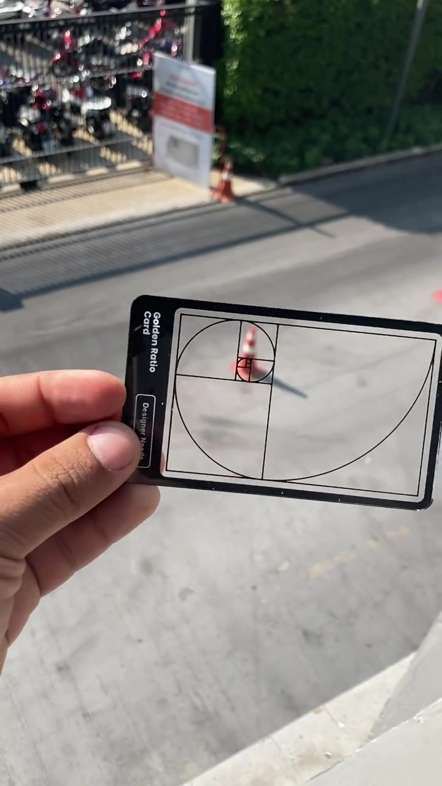
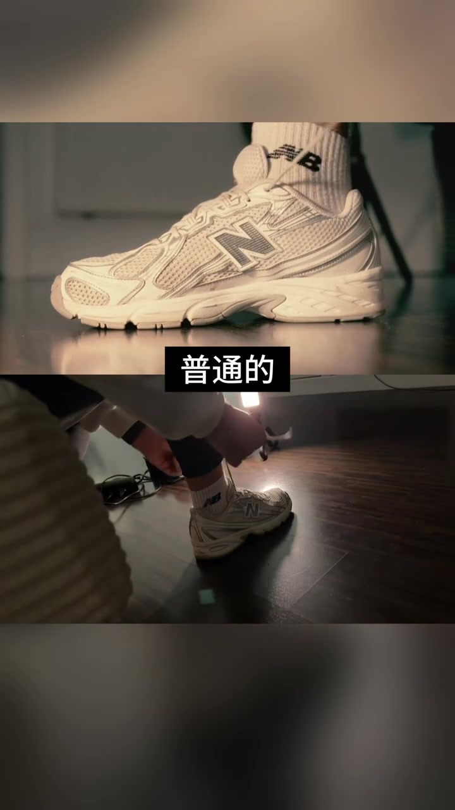
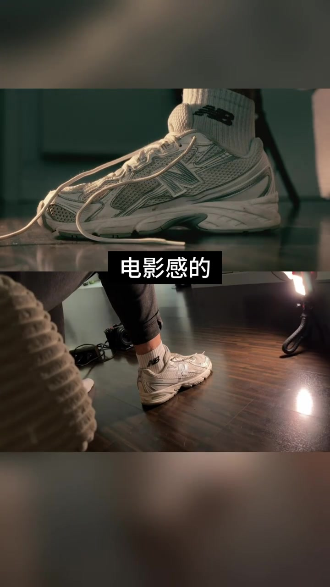
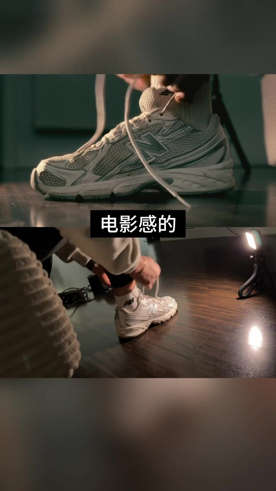
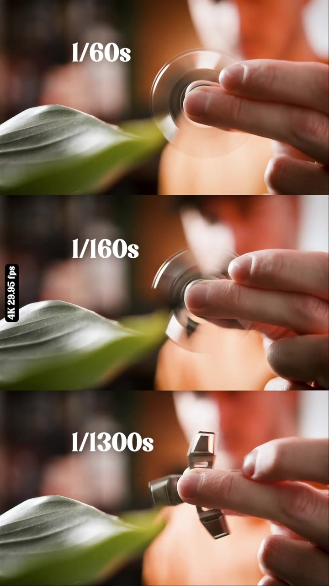
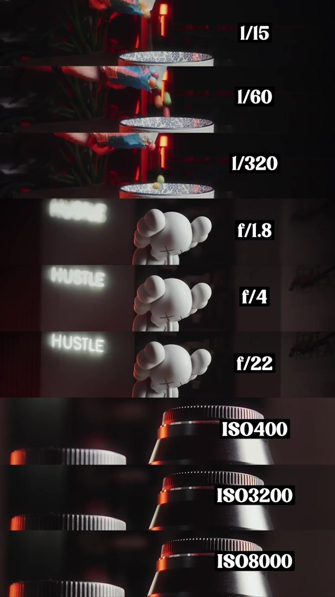

开场：黄金分割卡把路锥压进螺旋中心
视频一上来不是口播，而是一只手举起透明的「Golden Ratio Card」。卡面印着斐波那契螺旋与方格，左侧竖排英文标注。户外强光下，路锥、围栏与摩托车停放区被框进卡片；螺旋最密处大致对准路锥顶部，像在演示：电影感的第一刀，常常是构图取舍。
说明：整段几乎只有背景音乐。Whisper 全程识别为「Zither Harp」（古筝/竖琴类 BGM 标签），没有可用口播句。下文以可见画面与叠字为准；转录区仍保留 Whisper 原始分段。

先立反例：普通的球鞋近景
画面切成上下分屏。上半是 New Balance 球鞋近景——系鞋带、袜口 NB 标、浅色网面；下半是更宽的蹲姿环境，地板反光偏平，远处有相机或支架。中间黑底白字叠出「普通的」三个字，明确把当前观感标成「日常、未加戏」的对照基准。
画面字幕：「普通的」


再给正例：电影感的侧光怎么摆
分屏结构不变，叠字换成「电影感的」。上半近景高光更硬、阴影更深，鞋面金属件与网眼被侧光拉出层次；下半幕后镜头里出现方形 LED 灯板，架在柔性小三脚架上朝鞋照射，地板反射出明显光斑。视频用前后对照回答：所谓电影感，并不神秘——至少在这一段里，关键变量是可控的硬侧光。
画面字幕：「电影感的」

快门三档：指尖陀螺把运动糊成对比
下一段改成三格竖拼：同一只手捏着金属指尖陀螺高速旋转，前景有虚化绿叶。三格分别标出 1/60s、1/160s、1/1300s——慢门把臂膀糊成半透明圆环，中速开始露出臂影，极速则把三臂轮廓冻住。画面还偶见「4K 29.95 fps」角标，提示这是影像参数演示，不是产品广告。

收尾：快门、光圈、ISO 一张图讲完
最后一屏把曝光三角摊开成三组九格：快门用倒糖豆演示 1/15、1/60、1/320 的拖影到冻帧；光圈用前景玩偶与「HUSTLE」霓虹，对照 f/1.8、f/4、f/22 的景深；ISO 用镜头暗部特写，对照 ISO 400、3200、8000 的提亮与噪点。28 秒视频就此收束——电影感被拆成构图工具、打光对照、运动控制与曝光三角四块可视证据。
